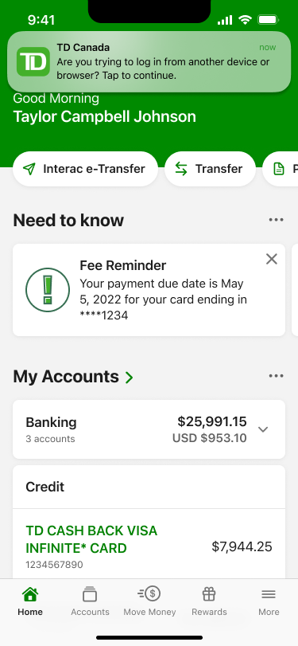
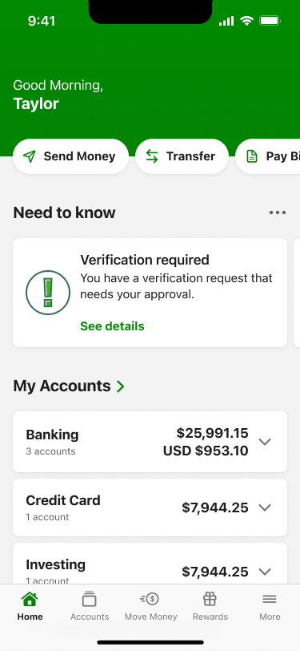
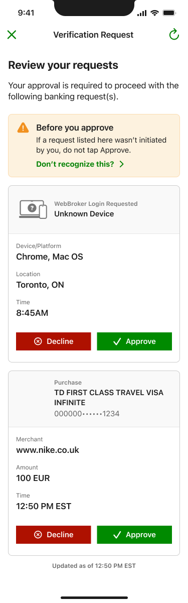
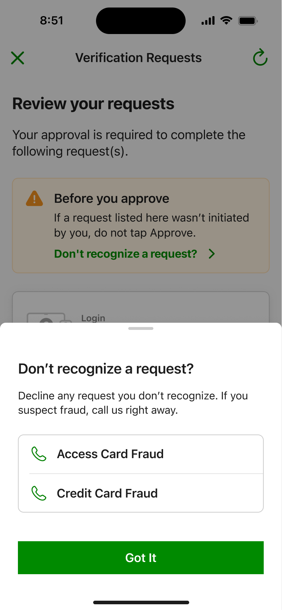
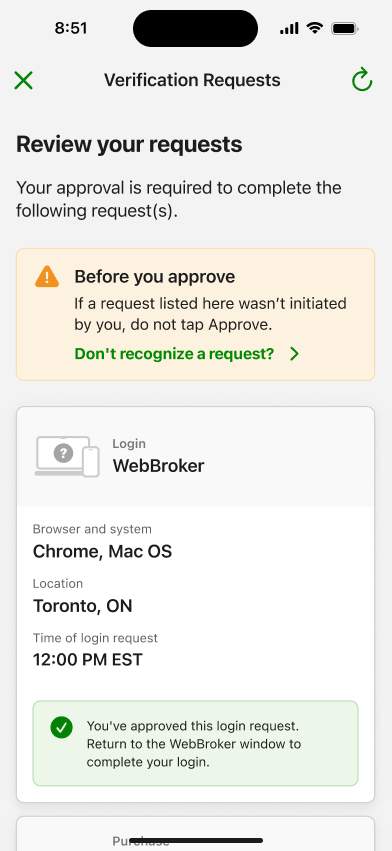
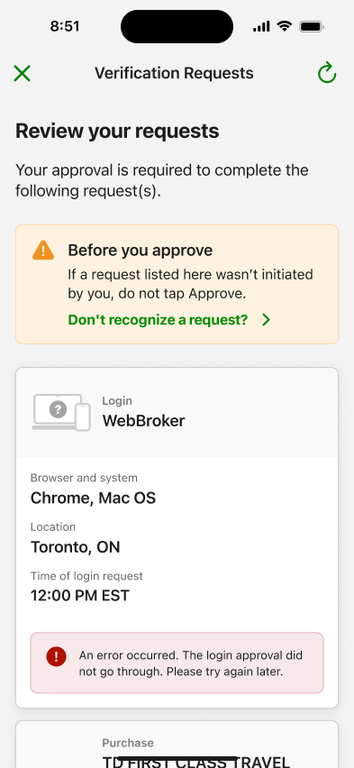
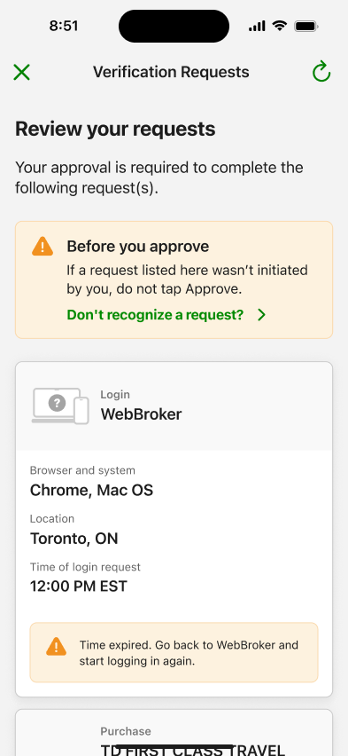
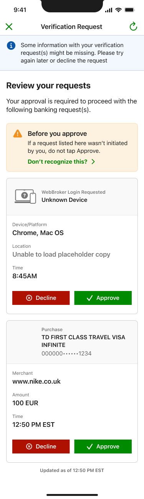

The passcode was secure.
The experience wasn't.
I redesigned how TD customers verify online purchases and logins — replacing SMS one-time passcodes with secure in-app approval. Instead of typing a six-digit code, customers review the actual request — merchant, amount, device, location — and approve or decline it directly in the TD app. Fraudulent activity reports dropped 35% across in-app and call-centre channels.
35%
Drop in fraudulent activity reports across in-app and call-centre channels
SMS → In-app
Verification moved from six-digit passcodes to contextual in-app approval
1
Consolidated view of all verification requests, with full transaction detail
01 — Context
One code for everything. Context for nothing.
When a TD customer made an online purchase or logged in from a new device, verification arrived as an SMS one-time passcode: six digits, a short expiry window, and no information about what was actually being verified. The customer's job was to copy the code — not to evaluate the request.
This pattern has well-documented problems. SMS codes can be intercepted or phished, they break the customer's flow mid-purchase, and — most importantly for fraud — they carry no context. A customer looking at "483902" has no way to notice that the purchase behind it isn't theirs.
My role was to design the in-app replacement: a verification experience that covers both e-commerce purchases and account logins, works across iOS and Android, and treats the customer as an informed decision-maker rather than a code-relay. That meant:
- Designing the notification-to-decision journey across every entry point
- Defining what context each request type needs to surface (purchase vs. login)
- Designing for the suspicious moment — what happens when a customer doesn't recognize a request
- Covering the full state space: approval, decline, expiry, errors, and partial data
02 — Problem
Verification that asked for trust but gave no information.
The SMS flow made customers responsible for security decisions while withholding everything they'd need to make one.
Research and support-call analysis pointed to two specific failures:
Customers approved reflexively.
A code arrives, the customer types it. The action had become muscle memory — which is exactly what fraud exploits.
Fraud was invisible until the statement.
With no merchant or amount shown at verification time, fraudulent transactions were typically discovered days later — driving disputed-charge calls to the call centre.
03 — Insights
Three findings that shaped the design.
01
Context is the security feature. A customer who can see merchant, amount, device, and location can catch fraud at the moment it happens. A customer with a six-digit code cannot.
Implication: every request must show its full context before any action is possible.
02
Approve and Decline must be equals. If declining is buried or feels like an error state, suspicious customers will approve anyway just to make the interruption go away.
Implication: Decline is a first-class action with equal visual weight, on every request card.
03
The unhappy paths are the product. Verification is a security surface: expired requests, failed approvals, and partial data aren't edge cases — they're the moments that determine whether customers trust the system.
Implication: design every state with the same care as the happy path.
04 — Design decisions
Four decisions.
Each in service of an informed customer.
01
Entry points: meet the customer at the moment of intent
A verification request is urgent and time-boxed, so the primary entry is a push notification that deep-links into the flow. But notifications get missed — so a "Verification required" card also surfaces in the app's Need to Know feed, ensuring a pending request is discoverable from the home screen. Two paths, one destination.


Rejected: Notification-only entry. A missed or dismissed notification would strand the request — and strand the customer mid-checkout.
02
Context over codes: every request shows who, what, where, when
Purchase requests show the card, merchant, amount, and time. Login requests show the platform, browser, location, and time of the attempt. This is the core of the redesign: the customer isn't relaying a code, they're evaluating a request — and they finally have the information to do it. Multiple pending requests consolidate into a single Verification Requests view, so nothing lives only in a disappearing text message.

Rejected: Minimal cards with a "view details" tap. Requiring a tap to see the merchant and amount would reintroduce the exact information gap the redesign exists to close.
03
Friction where it protects: designing the suspicious moment
Every request list opens with a persistent warning — "If a request listed here wasn't initiated by you, do not tap Approve" — with a "Don't recognize a request?" link. That link opens a bottom sheet that tells the customer to decline anything unfamiliar and gives one-tap phone lines to TD's Access Card and Credit Card fraud teams. The suspicious moment is designed, not left to the customer to improvise: recognize → decline → escalate, all without leaving the screen.

Rejected: Treating fraud guidance as help-centre content outside the flow. The moment of suspicion is the moment of action — routing customers to search a FAQ loses them.
04
Honest states: the system tells the truth under failure
Approval requests are time-boxed and API-dependent, so the state space is wide. Each outcome gets a distinct, plainly worded state on the request card: success (with a pointer back to the originating context — "Return to the WebBroker window to complete your login"), failure ("the approval did not go through — try again later"), and expiry ("go back and start logging in again"). When request data can't be fully loaded, the request degrades honestly — an "Unknown Device" label and a banner explaining information may be missing — rather than presenting a confident-looking card built on incomplete data. On a security surface, pretending certainty the system doesn't have is a dark pattern.




05 — Solution
From bare code to informed decision.
The shipped experience: a verification request arrives by push notification or surfaces on the home screen; the customer authenticates into the TD app and lands on a consolidated Verification Requests view; each request — purchase or login — presents its full context with equal-weight Approve and Decline actions; and every outcome, including failure and expiry, resolves to a clear, honest state.
The same framework handles both request types today and is built to extend to future verification scenarios without new patterns.
06 — Constraints & collaboration
Security work is cross-functional by definition.
Product
Balanced fraud-reduction goals against purchase-flow completion rates; verification that's too heavy kills conversions, too light defeats the purpose.
Fraud & Security
Defined the request metadata that could safely be surfaced (merchant, amount, device, location) and the escalation paths behind the fraud contact sheet.
Engineering
Requests are time-boxed and depend on multiple data sources; I specified fallback behaviour for every partial-data and timeout scenario so the UI stays truthful under degraded conditions.
Design Systems
Built on existing card, banner, and bottom-sheet primitives; flagged the request-card pattern for incorporation into the system.
07 — Outcomes
Fewer fraud reports. A verification flow customers can actually read.
Fraudulent activity reports dropped 35% across in-app and call-centre channels. The mechanism is visible in the design: customers who see the merchant and amount at verification time catch fraudulent requests in the moment and decline them — instead of discovering them on a statement and calling in.
Verification also moved from a channel TD doesn't control (SMS) into the authenticated app, strengthening the security of the transaction itself, and gave customers a single consolidated place to review every pending and past request.
35%
Fraud reports down
Drop in fraudulent activity reports across in-app and call-centre channels.
SMS → In-app
Verification channel
Verification moved into the authenticated app, with full transaction context.
2 request types, 1 pattern
Consolidated framework
Purchases and logins handled by one consolidated, extensible verification framework.
08 — Reflection
What I'd do differently.
The degraded-data states were designed after the core flow rather than alongside it. On a security surface, the partial-data experience deserves first-class treatment from day one — "Unknown Device" is one of the most consequential strings in the entire feature.
I'd also push for earlier baseline instrumentation on the SMS flow. The 35% outcome is strong, but a richer before/after picture — decline rates, time-to-decision, fraud catch rate at verification time — would have told us more about why it worked.
What this reinforced.
Security UX is trust UX. The biggest design lever wasn't a screen — it was deciding that the customer deserves the same information the system has. And the unglamorous work — expiry states, error copy, partial-data fallbacks — is where that trust is actually won or lost.